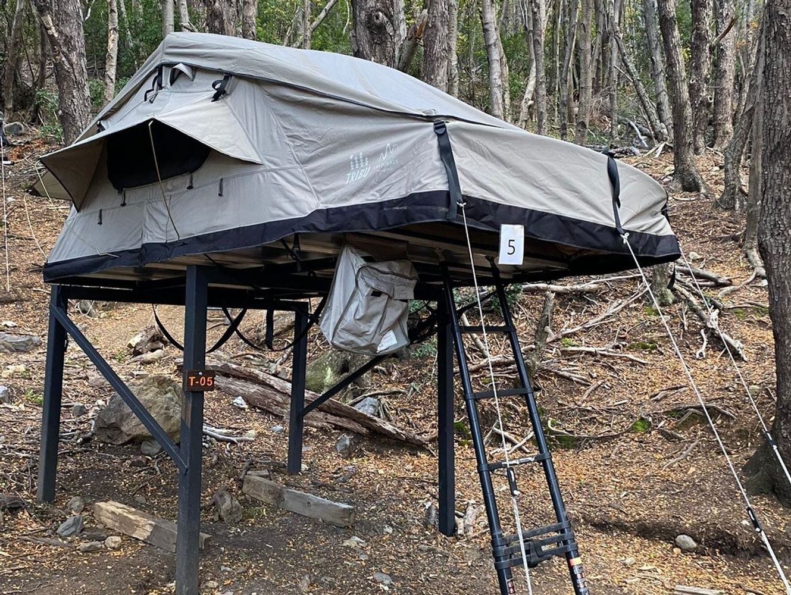
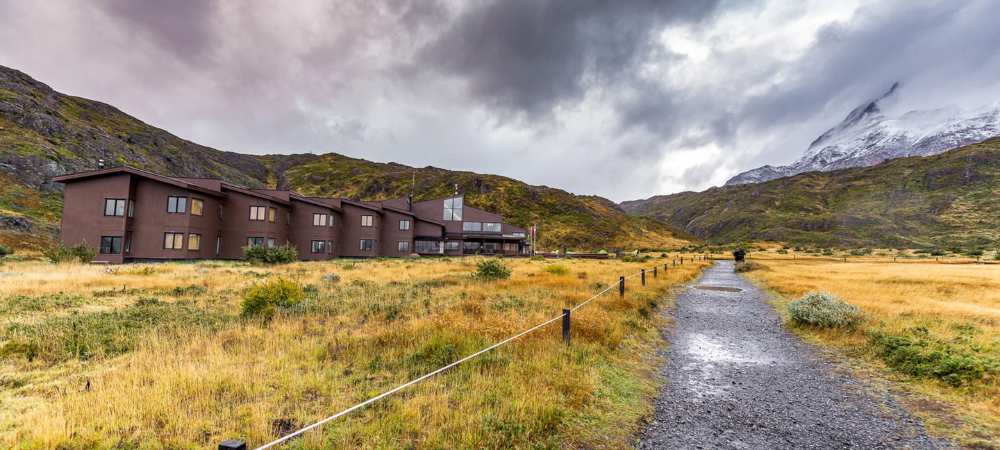
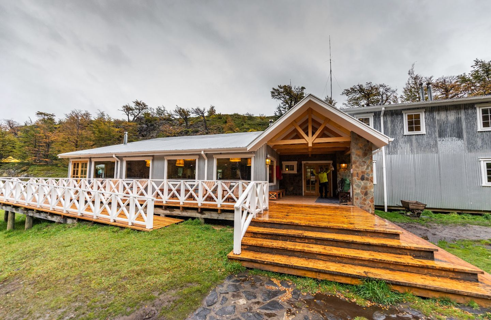
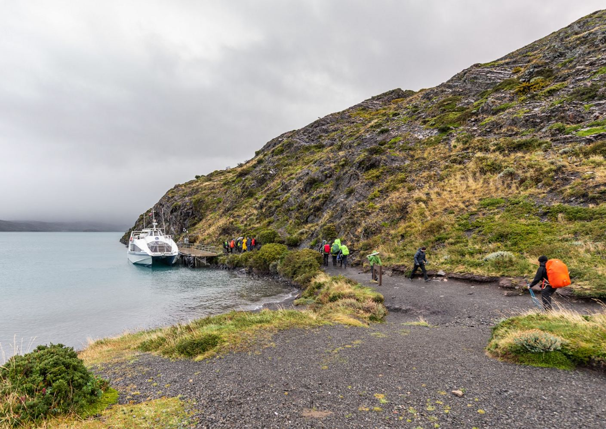

Context
My background in trekking comes from one prior large-scale experience: a 9-day Mt. Everest Base Camp trek. Leading up to that trip, I trained once a week throughout the winter for multiple hours at a time, exploring the Cleveland Metroparks while wearing a 20lb weighted vest and running stairs and hiking the trails at Rocky River Reservation. That experience shaped everything I know about how to prepare mentally, physically, and logistically for a multi-day trek.
All insights in this guide are filtered through that lens — what I learned getting ready for EBC and what actually played out on the trail. I'm not a professional guide or seasoned thru-hiker. I'm a guy who showed up prepared, took it seriously, and came back with a lot of hard-won perspective to share.
Going into Patagonia, I'll be honest — I didn't take it as seriously as I should have. Coming off EBC, I mentally categorized the W Trek as the "easier" trip. And in some ways, compared to the altitude and duration of Base Camp, it is. But make no mistake: this trail is no joke. It is physically demanding from start to finish, and underestimating it is a mistake I'd encourage you not to repeat.
I wish I had done dedicated rucking training leading up to this trip. My pack weighed in at roughly 30–35 lbs, which was on the heavier end compared to others in our group. Every pound matters on this trek — you will feel the difference between a 25 lb pack and a 35 lb pack on day four when your knees are already screaming. Be thoughtful and intentional when packing. Take what you need, question everything else, and leave the non-essentials at home.
Overview
The W Trek is one of the most iconic multi-day hikes in the world, located inside Torres del Paine National Park in Chilean Patagonia. The route gets its name from the W-shaped path it traces across the park, connecting three major glacial valleys and culminating at the world-famous granite towers — Las Torres.
Trip was completed: March 2026 (late summer in Patagonia)
Booked through: ChileTour Patagonia — W Trek Classic 7 Days / 6 Nights
Important: All weather conditions, gear recommendations, and packing suggestions in this guide are based on a March departure. Patagonia is notoriously unpredictable and conditions can change dramatically depending on season. If you're going in November–December (early summer) or in shoulder season (April–May), adjust your gear and expectations accordingly.
A note on terrain and your body: You will spend the majority of this trek walking on rocks — loose rocks, wet rocks, boulder fields, and uneven trail surfaces from start to finish. This is relentless on your feet, ankles, and knees. Any form of support you can give your body is highly recommended: quality waterproof boots that are fully broken in before you arrive, merino wool socks, trekking poles, and any braces or wraps for knees or ankles that have a history of flaring up. I experienced intense knee pain with nearly every step for most of the trek. It didn't stop me, but I felt it constantly. Don't wait until you're on the trail to think about this — address it before you leave home.
Trip Outline
Pro tip from ChileTour: Pack your trekking clothes in your carry-on luggage. If your checked bag is delayed, you can still start the trek on time while waiting for it to arrive.
Day 1 — March 11 | Arrival in Puerto Natales
Arrival day. Get settled, shake off the travel, and get your head in the game.
- 17:30 — W-Trek Briefing with Q&A (attend this — it covers logistics, safety, and what to expect each day)
- Accommodation: Garden Domes Cabins
- Meals: Welcome Dinner at 6:00 PM
Day 2 — March 12 | Base of the Towers — Las Torres (22 km / 8–10 hrs)

The big one comes first. You're hiking to the iconic granite towers on Day 1 of trekking, which is a bold way to open the trip. It's a long, demanding day — the final approach is a steep boulder field that will test your legs right out of the gate.
- 6:00 AM — Breakfast
- 6:30 AM — Pick up and departure for Torres del Paine National Park
- Full day guided trek to the Base of the Towers
- Accommodation: Laguna Amarga
- Meals: Breakfast, Lunch (boxed), Dinner
- Notes: Trekking poles are provided by ChileTour on this day — return them to your guide or driver at the end if you don't want to rent them going forward. You can leave half your gear in the van and only carry what you need for the tower hike. When you return, collect your belongings from the van before checking into your accommodation.
This day was either the hardest of the entire trek or damn near close to it — Day 4 gives it a run for its money. My legs and knees were completely toast by the end, but the views and the experience are absolutely worth every step. Instead of carrying your full backpack, I'd strongly recommend bringing just a day pack with water and rain gear. Once you're high enough on the mountain, you can drink straight from the water sources and refill your bottle along the way. Expect significant elevation gain and loss, unpredictable weather — high winds, rain, all of it — but also some of the most immaculate views of the entire trip. You'll finish the day completely exhausted and completely in awe.
Day 3 — March 13 | Lago Nordenskjöld → Refugio Los Cuernos → Camping Francés (14.6 km / 6.5 hrs)

A more moderate day by distance, but still a full effort. You'll trek along the stunning shores of Lago Nordenskjöld with the Cuernos (Horns) dominating the skyline ahead of you.
- 8:00 AM — Breakfast
- 9:30 AM — Pick up from cabins, head to trailhead (same trailhead as Day 2, near Hotel Las Torres Welcome Center — follow signs to Los Cuernos)
- Accommodation: Camping Francés (tent, sleeping bag, and mat included)
- Meals: Breakfast, Lunch (boxed voucher), Dinner (voucher)
- Notes: Meal vouchers are provided — present them at the Camping Cafeteria whenever you're ready to eat. Before going to bed, ask Refugio Francés for a 7:00 AM breakfast the following morning. You'll need it.
We went into this day thinking it would be a relative rest day after the beating of Day 2. It was anything but. Your legs are already heavy from the towers, and you'll still gain and lose a significant amount of elevation throughout the day. That said, the views along Lago Nordenskjöld are stunning, and there are plenty of waterfalls and viewpoints along the way that make every bit of effort worth it.
A highlight: stop at Refugio Los Cuernos before pushing on to Camping Francés. Grab a meal and have a beer — it's a great way to break up the day mentally and physically, and the setting is unreal.
One thing to know about the overnight at Camping Francés: the accommodation is suspended tents, and we did not sleep great. Throughout the night we kept hearing loud booming sounds. We initially assumed it was thunder, but the next morning those sounds continued and we eventually learned they were avalanches coming off the surrounding peaks. You'll likely witness multiple avalanches the following day and hear them echoing through the valley all day long — an experience that's equal parts surreal and humbling. One more heads up: there was a lot of condensation inside the tent overnight that left our packs and clothes noticeably damp by morning. Pack accordingly and keep anything moisture-sensitive inside a dry bag.
WiFi & Phone Use on the Trek
Cell service is essentially nonexistent once you're inside the park. Most refugios offer a small amount of free WiFi — typically around 30 minutes per location — but the free signal is weak and unreliable. Messages may not come through and video calls are a non-starter on the complimentary connection.
My recommendation: purchase a WiFi card from the kiosk at Camping Francés. It's well worth the cost. The paid connection is significantly better and allowed me to FaceTime with my kids, which made a real difference being that far from home for that long. If staying connected — even briefly — matters to you, don't rely on the free WiFi.
Day 4 — March 14 | French Valley → Paine Grande (20–24 km / 8–9 hrs)

The longest and most variable day of the trek. The French Valley is one of the most dramatic landscapes on the route — hanging glaciers, thundering rockfall, and towering walls of stone on all sides. How far you push into the valley is up to you, which means this day can be short or genuinely epic.
- 7:00 AM — Breakfast; start walking by 7:30 AM
- Trek to Italiano Ranger Station → option to leave your pack and hike light into the valley
- Mirador Francés (~1 hour from Italiano) → Mirador Británico (~2–2.5 hours further)
- Watch for bright orange trail markers — paths in the upper valley are less defined
- After returning from the valley, cross the footbridge toward Lago Pehoé and Paine Grande (follow the signs)
- Accommodation: Refugio Paine Grande
- Meals: Breakfast, Lunch, Dinner
- Notes: Ask for the earliest breakfast option the night before. The hanging bridge crossing marks your transition out of the valley and toward the next leg of the W.
This day will be a bitch — I'll be honest about that. But it will also deliver the best views of the entire trip, in my opinion. You'll likely be sore going in, and the day involves serious elevation gain and loss since the French Valley is an in-and-back. The views from Camping Francés alone are worth it, and keep your camera ready — you'll see and hear avalanches throughout the day coming off the surrounding peaks.
As you approach Mirador Británico near the top, there's a short scramble over rocks that leads to a full 360-degree view of Patagonia. It's one of those moments that stops you cold. There's a high rock at the top — be careful, but if you can stomach it, go up. We ate lunch from that spot and it was one of the best meals of the trip simply because of where we were sitting.
The trek down was brutal on my knees, and after returning from the valley you still have to push all the way to Refugio Paine Grande. This is without question the longest day of the hike, and you will feel every kilometer of it. Do everything you can the night before to rest your body and stay hydrated. The reward at the end is real — Refugio Paine Grande is one of the best stays of the trip, the sleep is great, and the pizza is genuinely amazing.
Day 5 — March 15 | Refugio Paine Grande → Refugio Grey (11 km / 3 hrs)

The shortest trekking day of the trip, but don't underestimate it. The wind coming off Glacier Grey can be punishing and completely relentless — this is where Patagonia's infamous weather earns its reputation. The reward is one of the most surreal landscapes of the entire trek: massive icebergs drifting across Lake Grey with the glacier behind them.
- 6:30 AM — Breakfast; start walking by 7:00 AM
- Trek to Refugio Grey along the lakeshore
- Optional extension: walk to the hanging bridges — you can reach the second one and see the glacier lookout in about 10 minutes beyond it
- Accommodation: Refugio Grey
- Meals: Breakfast, Lunch, Dinner
By this point, my legs were absolutely destroyed. Even though this is the shortest leg of the entire trek, you're arriving at it at the tail end of four grueling days — and your body knows it. As we approached, we saw countless icebergs floating in the grey-blue water alongside Glacier Grey, which is a genuinely otherworldly sight. When you get close to Refugio Grey, there's a downhill rock section that is pretty brutal — tired legs on uneven rock is a rough combination. Take your time through it. Slow down, plant your poles, and let your body do the work carefully. It's not the place to rush, and your knees will thank you.
Day 6 — March 16 | Trek Out + Catamaran → Puerto Natales

The W Trek is officially complete. How you spend this final day is up to you.
- Option 1 — Trek back to Paine Grande: Retrace part of the route back toward Refugio Paine Grande, then catch the catamaran
- Option 2 — Catamaran from Grey: Skip the return trek entirely and catch the catamaran directly from Refugio Grey
- 5:00 PM — Catamaran departs from the pier next to Refugio Paine Grande to Pudeto (30-minute boat crossing)
- ChileTour van picks you up at Pudeto and transports you back to Puerto Natales
- Pizza night at El Brisket — this is your celebration meal
- Accommodation: Garden Domes Cabins
- Meals: Breakfast, Lunch, Dinner
My recommendation: skip the trek back to Paine Grande. You will have already seen everything on that stretch of trail and completed the full W. If you want the extra challenge and miles for personal satisfaction, go for it — but if your body is telling you it's done, listen to it. Catch the catamaran from Refugio Grey, soak in the last views of the glacier, and let the boat do the work. Save your legs for the pizza.
Day 7 — March 17 | End of Program
Final morning. Rest, reflect, and get to the airport.
- Meals: Breakfast
- Bus transfer to Punta Arenas Airport (PUQ) or Natales Airport depending on your departure routing
Additional Activities
The W Trek is the centerpiece of a trip to Torres del Paine, but there are add-on experiences available at Refugio Grey that are genuinely worth considering — depending on how your body is holding up and what kind of adventurer you are.
Glacier Hiking
Glacier hiking on Grey Glacier is, without question, one of the highlights of the entire trip for me — and I say that having just spent five days trekking some of the most beautiful terrain on earth.
After completing the final leg of the W, our group trekked an additional 2.5 miles on the glacier itself. My legs were sore, but it was absolutely worth it. The experience is completely weather dependent — we were lucky enough to get perfect conditions — and when the weather cooperates, what you get is unlike anything else. We used crampons and ropes, drank water straight from the glacier, hopped across crevasses, and explored glacial tunnels carved into ancient blue ice. It was surreal in the best possible way and easily one of the most memorable experiences of the trip.
If you're booking the W Trek, I'd strongly encourage you to add glacier hiking. Just know going in that the weather controls whether it happens — you may arrive and conditions won't allow it. If you get lucky with a clear day, don't skip it.
Kayaking
After putting my body through the W Trek and the glacier hike, I made the personal decision to skip kayaking — my tank was empty and I didn't have anything left to give. That said, several members of our group who also did the glacier trek went ahead with the kayak as well, and they said it was absolutely worth it.
The route takes you from Refugio Grey by kayak toward Glacier Grey, getting you within about 50 yards of the glacier face. Along the way you'll paddle past icebergs and get up close to a waterfall. It's a completely different perspective on the same landscape you've been hiking through — quieter, slower, and stunning in its own way.
If your body has anything left in it after the trek, it's worth serious consideration.
Packing List
All items below are based on a March trek (late summer in Patagonia). Conditions are highly variable — temperatures can swing from mild to freezing within hours, and rain and wind can hit at any time of day. Pack for all scenarios.
Suggested (Bring These)
Clothing
- 1 pair thermal long pants (base layer)
- 1 pair thermal long shirt (base layer)
- 1 pair trekking pants
- 1 pair trekking shorts
- 3 synthetic or merino wool shirts
- 5 pairs underwear
- 7 pairs merino wool socks
- Waterproof hiking boots (broken in before the trip — do not arrive with new boots)
- 1 pair sandals (for use inside the refugios — your feet will need this)
- Waterproof windbreaker jacket
- Waterproof pants (rain pants)
- Poncho (extra layer of rain protection, especially in exposed sections)
- Puffer jacket (insulating mid layer)
- Waterproof gloves
- Winter hat / beanie
- Light hat / sun hat (for sun exposure on clearer days)
Gear
- 40–50L backpack with lumbar/hip support
- Trekking poles (non-negotiable — critical for the boulder field at Las Torres and long descents)
- Quick dry towel
- Dry bags in multiple colors — use different colored dry bags to organize and separate your belongings inside your pack. It makes finding gear fast, keeps everything dry, and is a simple system that pays dividends when you're digging through a wet pack at the end of a long day
Health & Hygiene
- Sunscreen
- ChapStick / lip balm
- Toothbrush + toothpaste
- Bar of soap / travel shampoo
- Any braces or supports for previous injuries or known flare-ups
- First aid kit
- Tylenol
- Ibuprofen
- Imodium
- Pepto Bismol
Food & Power
- 6–10 trail snacks (nuts, protein bars, jerky — refugio meals don't cover the full day)
- Battery bank (power is limited to unavailable on trail)
- Charger and cables
Optional (Nice to Have)
- Headlamp — useful for navigating the refugio at night, early morning starts to Las Torres, or any hiking outside of daylight windows
- Silk sleeping bag liner — refugios provide blankets, but a liner adds warmth and a layer of comfort/hygiene
- Deck of cards or small game — evenings at the refugio are communal and social; a card game breaks the ice and makes the nights memorable
- Tiger Balm or muscle recovery lotion — your legs will be worked; a nightly rubdown goes a long way
- Emergen-C — immune support during and after long international travel
- Electrolyte mix — helpful for staying properly hydrated, especially on long, windy exposure days
- Dry bag or 10L day pack — useful for day hikes out of a central camp, keeping valuables dry, or organizing gear inside your main pack
This guide was written based on a firsthand March 2026 experience. It is not exhaustive — every trekker's needs are different — but it reflects what I genuinely wish I had known going in. If you have questions, feel free to reach out.
Video Playlist
The complete W Trek video series — documenting the experience from arrival to summit.